Action
Action games emphasize physical challenges that require hand-eye coordination and motor skill to overcome. They center around the player, who is in control of most of the action. Most of the earliest video games were considered action games; today, it is still a vast genre covering all games that involve physical challenges.Types:
Platform Games
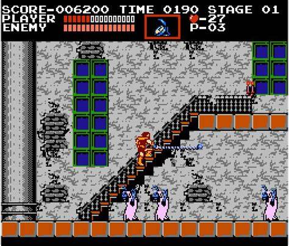
Shooter Games
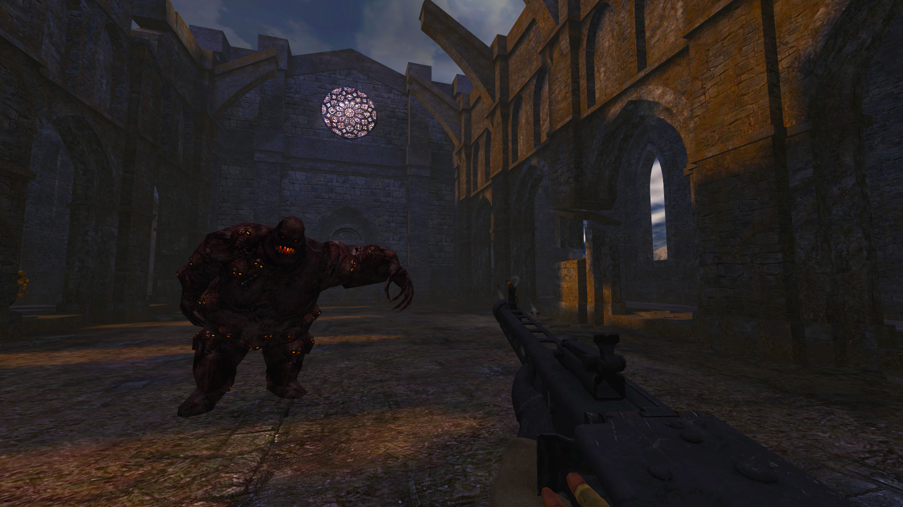
Fighting Games
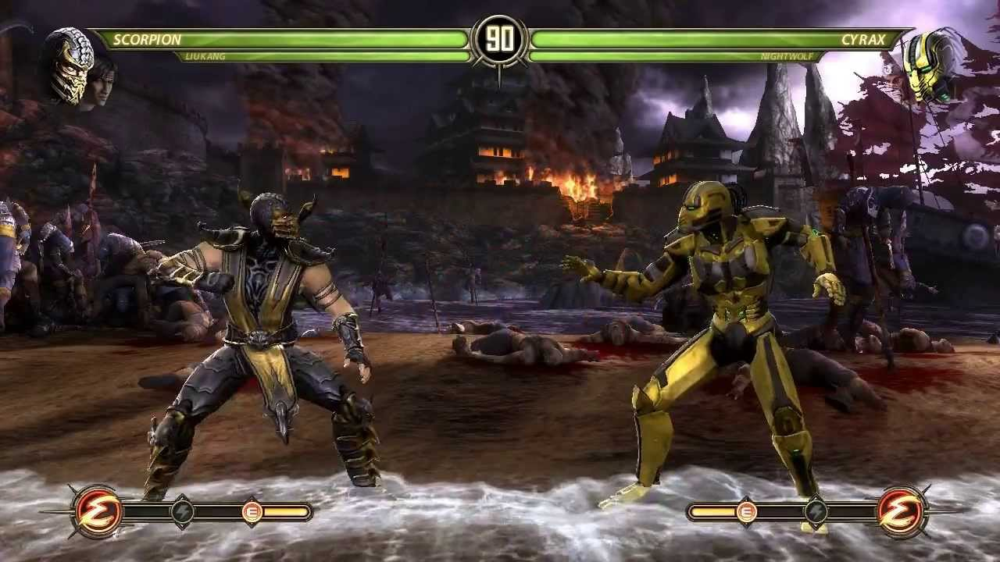
Beat 'em up
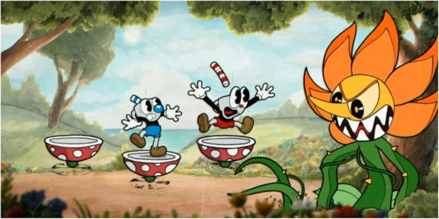
stealth Games
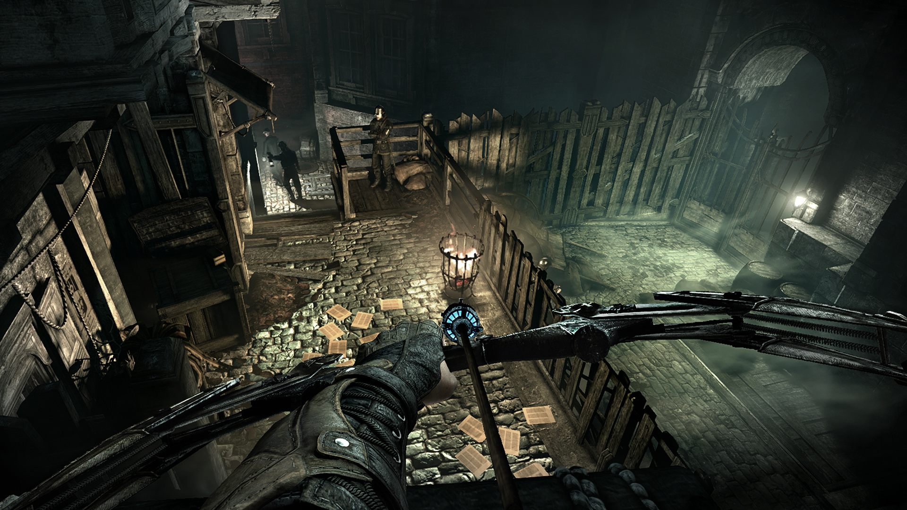
Survival Games
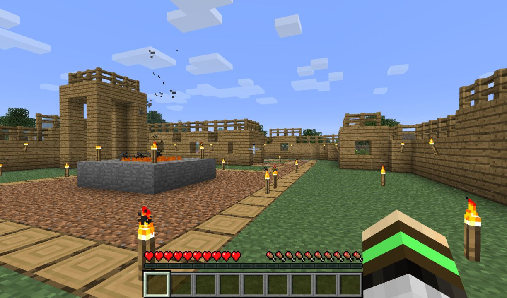
4X Games
Artillery Games
Auto-battler Games
Multiplayer online battle arena Games
Real-time strategy Games
Puzzle
Puzzle games are for those who like to put their brain to use and find the thrill in solving puzzles. Whether simple adaptations of real-world puzzles like Sudoku or full-blown puzzle games meant to be explored in a video game environment, there’s a lot of variety on offer. They test the player’s problem-solving skills including logic, pattern recognition, sequence solving, and word completion. Puzzle games continue to find millions of fans, especially on mobile phones where games like Candy Crush Saga are extremely popular. Puzzle games focus on logical and conceptual challenges. While many action games and adventure games include puzzle elements in level design, a true puzzle game focuses on puzzle solving as its primary gameplay activity.
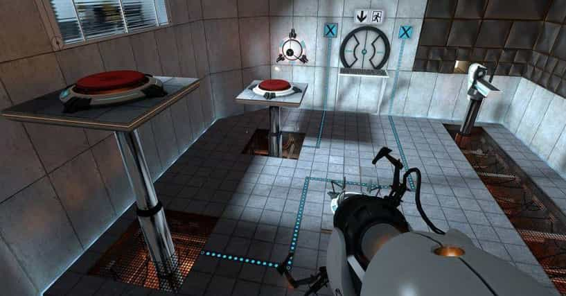Role-playing
Role-playing video games draw their gameplay from traditional tabletop role-playing games like Dungeons & Dragons. Most of these games cast the player in the role of a character that grows in strength and experience over the course of the game. By overcoming difficult challenges and/or defeating monsters, the player gains experience points which represent the character's progress in a chosen profession or class (such as melee combat or ranged magic spells) and allow the player to gain new abilities once a set amount are obtained. Many RPGs contain an open world known as an overworld, which is usually populated with monsters, that allows access to more important game locations, such as towns, dungeons, and castles.
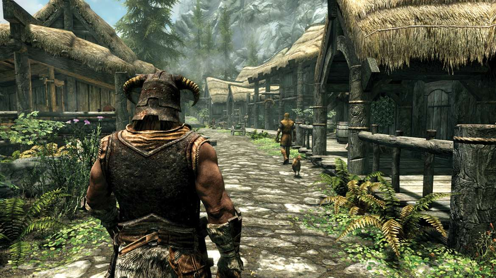Simulation
Simulation video games is a diverse super-category of games, generally designed to closely simulate aspects of a real or fictional reality.
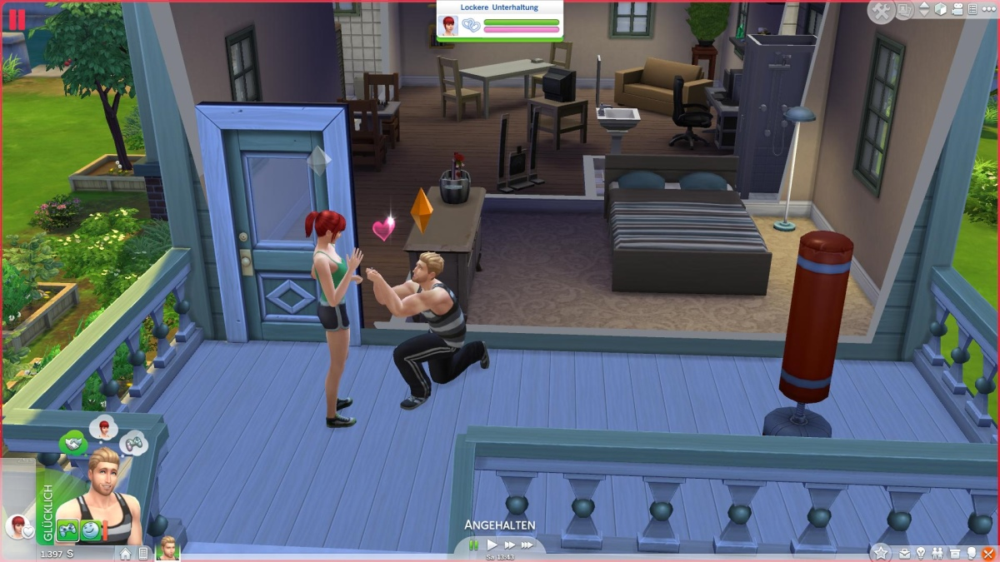Strategy
Strategy video games focus on gameplay requiring careful and skillful thinking and planning in order to achieve victory and the action scales from world domination to squad-based tactics. “In most strategy video games,” says Andrew Rollings, "the player is given a godlike view of the game world, indirectly controlling the units under his command." Rollings also notes that "The origin of strategy games is rooted in their close cousins, board games." Strategy video games generally take one of four archetypal forms, depending on whether the game is turn-based or real-time and whether the game's focus is upon strategy or tactics. Real time strategy games are often a multiple unit selection game (multiple game characters can be selected at once to perform different tasks, as opposed to only selecting one character at a time) with a sky view (view looking down from above) but some recent games such as Tom Clancy's EndWar, are single unit selection and third person view. Like many RPG games, many strategy games are gradually moving away from turn-based systems to more real-time systems.
4X refers to a genre of strategy video game with four primary goals: eXplore, eXpand, eXploit, and eXterminate. A 4X game can be turn-based or real-time. Perhaps the best known example of this genre is Sid Meier's Civilization series. 4X games often cover a very large period of time, giving the player the control of an entire civilization or species. Typically these games have a historical setting, encompassing a large amount of human history (Empire Earth, Civilization, Golden Age of Civilizations) or a science fiction setting where the player controls a species set to dominate the galaxy (Master of Orion, Galactic Civilizations).
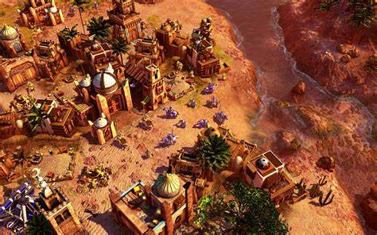Artillery is the generic name for early two or three-player (usually turn-based) computer games involving tanks fighting each other in combat or similar derivative games. Artillery games were among the earliest computer games developed and can be considered an extension of the original use of computers, which were once used for military-based calculations such as plotting the trajectories of rockets. Artillery games are considered a type of turn-based tactics game, though they have also been described as a type of "shooting game." Examples of this genre are Pocket Tanks, Hogs of War, Scorched 3D and the Worms series.
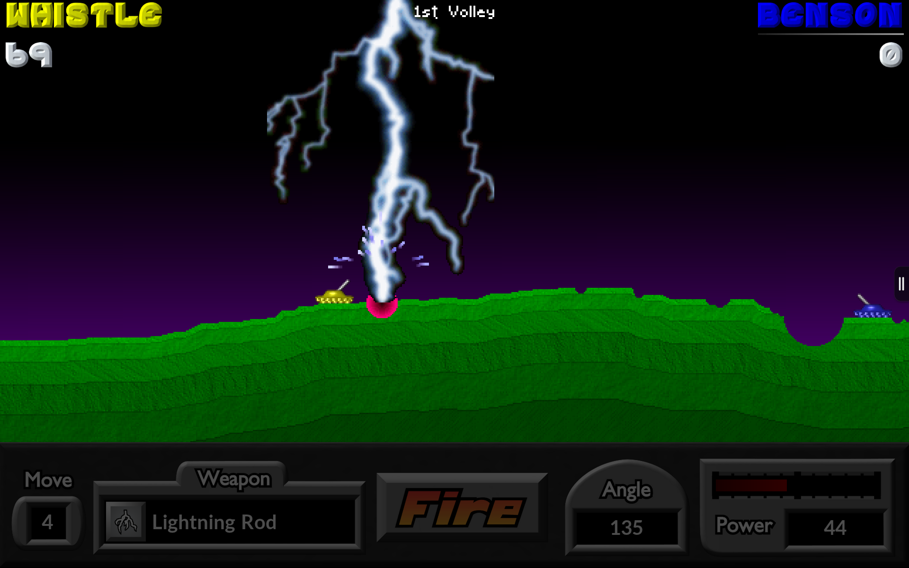Auto battler, also known as "auto chess", is a type of strategy game that features chess-like elements where players place characters on a grid-shaped battlefield during a preparation phase, who then fight the opposing team's characters without any further direct input from the player.It was created and popularized by Dota Auto Chess in early 2019.
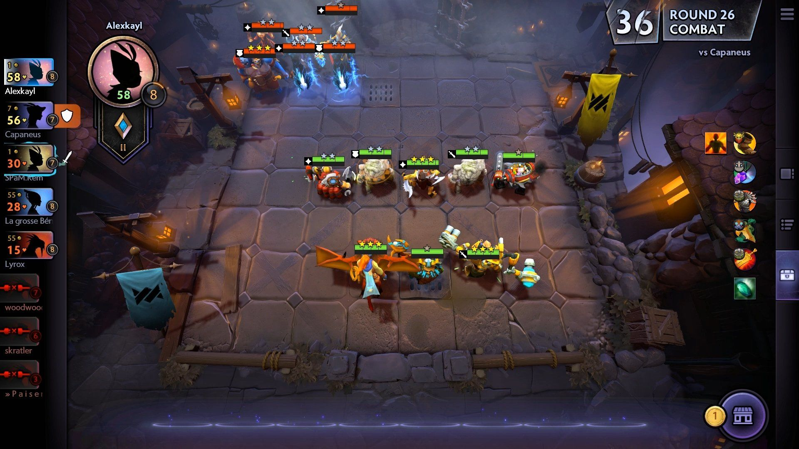Multiplayer online battle arena (MOBA) is a genre of strategy video games in which each player controls a single character with a set of unique abilities that improve over the course of a game and which contribute to the team's overall strategy. Players work together as a team to achieve a victory condition which is to destroy the opposing team's main structure whilst protecting their own. Player characters, typically called "heroes" or "champions", are assisted by computer-controlled units that periodically spawn in groups and march forward along set paths (called "lanes") toward their enemy's base. Defensive structures, which are usually automatic "towers", are in place to prevent this. The first team to destroy the opponents' main structure wins the match.The genre is seen as a fusion of real-time strategy games, role-playing games, and action games, however, players usually do not construct either buildings or units. This type of multiplayer online video games gained popularity in early 2010s, with Defense of the Ancients mod for Warcraft III, League of Legends, Dota 2, Heroes of the Storm, Mobile Legends: Bang Bang, and Smite being popular. MOBA games are well-represented in esports as well. In 2018, prize pools reached over US$60 million, 40% of the year's total esports prize pools.
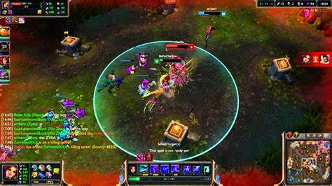The moniker "real-time strategy" (RTS), usually applied only to certain computer strategy games, (however, this genre is probably the most well known of strategy games and is what most websites mean when they say "strategy games") indicates that the action in the game is continuous, and players will have to make their decisions and actions within the backdrop of a constantly changing game state. Real-time strategy gameplay is characterised by obtaining resources, building bases, researching technologies and producing units. Blizzard Entertainment's Starcraft is a popular RTS played competitively in South Korea and televised to large audiences. Other notable games include the Warcraft series, Age of Empires series, Dawn of War, Company of Heroes, Command and Conquer, and Dune II (essentially the first RTS game).
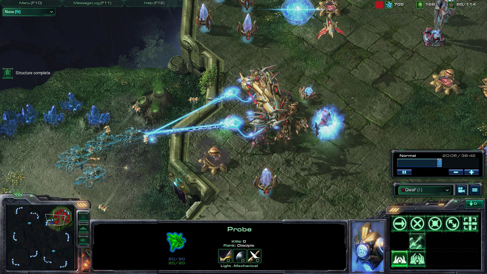Horror
Horror games are games that incorporate elements of horror fiction into their narrative, generally irrespective of the type of gameplay. It is the only major video game genre that is recognized by narrative elements rather than by gameplay, gameplay mode, or platform. Survival horror is a subgenre of horror games focused on action-adventure style of gameplay
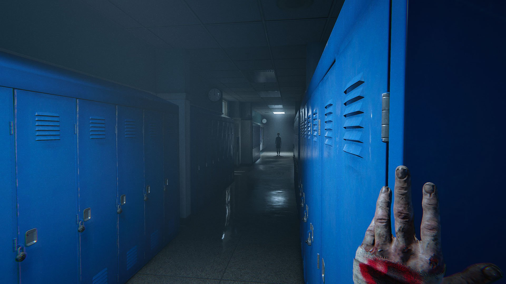-Putila Mihai-